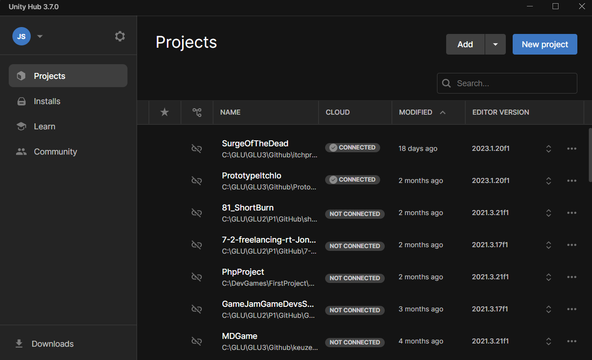

Usage/Explanation
This is my Unity Hub with a few games that i worked on or i'm still working on.

Unity:
Definition: Unity is a game development engine that allows developers to create 2D, 3D, augmented reality (AR), and virtual reality (VR) games and applications.
Features: Unity provides a user-friendly interface, a vast asset store, and supports a wide range of platforms, including PC, consoles, mobile devices, and more.
Workflow: Unity uses a component-based system where game objects are constructed by attaching components to them. Developers can design scenes visually and use C# scripts to add functionality.
In summary,
Unity is a powerful for game development, providing a robust framework, a friendly development environment, and the ability to create a wide range of interactive experiences.